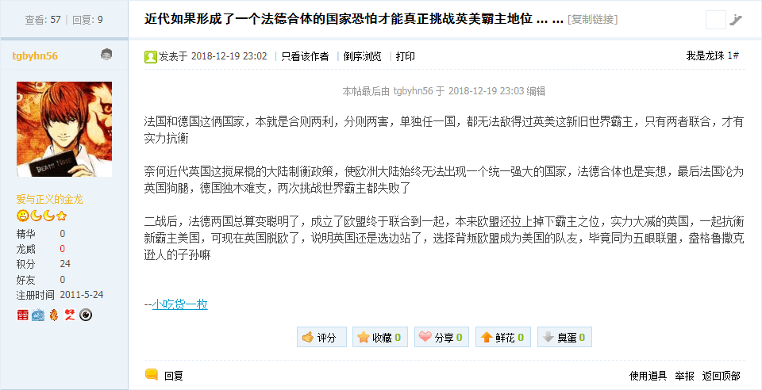

范狂夫
按照「激化矛盾制造冲突增加剧情跌宕起伏程度」的文艺理论，按照「打酱油做俯卧撑看热闹不嫌事大」的处事原则，按照「国家不幸诗家幸自古文章憎命达」的屁股决定脑袋的诡辩唯物主义立场，可以不惮以最大的恶意揣测新时代中国特色社会主义大好形势下繁荣的中文互联网上活跃的色目宣传工作者所接受的组织安排的任务。
刚看见之江临安「原创文学论坛」当中曾经指桑骂槐「邓丕平这人是不是贱到骨子里去了，老婆被后清亲王李维汉抢走还得赔笑脸」的那位著名色目宣传工作者兼文艺爱好者，忽然「曰若稽古」「如是我闻」了以下内容：

近代如果形成了一个法德合体的国家恐怕才能真正挑战英美霸主地位
法国和德国这俩国家，本就是合则两利，分则两害，单独任一国，都无法敌得过英美这新旧世界霸主，只有两者联合，才有实力抗衡
奈何近代英国这搅屎棍的大陆制衡政策，使欧洲大陆始终无法出现一个统一强大的国家，法德合体也是妄想，最后法国沦为英国狗腿，德国独木难支，两次挑战世界霸主都失败了
二战后，法德两国总算变聪明了，成立了欧盟终于联合到一起，本来欧盟还拉上掉下霸主之位，实力大减的英国，一起抗衡新霸主美国，可现在英国脱欧了，说明英国还是选边站了，选择背叛欧盟成为美国的队友，毕竟同为五眼联盟，盎格鲁撒克逊人的子孙嘛
色目宣传工作者透露的重要情报
简单说，艺术来源于生活又高于生活，现实素材无论真假只要合理就可以加以利用。正好「精神病仆街写手」我老人家「没有自知之明」的为了「政治和意识形态斗争」而炮制《范版西幻设定集》，这种素材正好可以拿来主义。
也就是说，按照当年「祖龙」查理曼所奠定的「彼日耳曼兲朝上国」的版图，设定欧罗巴「三国演义」到了大结局，德意志民族神圣罗马帝国复活，囊括荷兰比利时卢森堡，吞并北意大利，还有个附庸的法兰西，并且与瑞士建立全面战略协作伙伴关系……
实现这个「大目标」其实并不困难。
众所周知法兰西第六共和国自打1973年央行私有化以来就是傀儡国家了，最近连利息都还不上只能算僵尸国家。于是财政崩溃，欧元发行权缩水，法兰西本土拒收本土法币而流行背面印着德意志角色的欧元钞票，这附庸就到手了。
意大利同理可证，只要预算谈不妥，波河流域宣布独立，照样拒收本土法币而采用德意志版钞票，也到手了。
低地国家无所谓，还是用本土欧元。而瑞士稍微麻烦点，但也有先兆。比方说最近「德意志银行」准备和「德国商业银行」合并，但前几年的风向可是与苏黎世的「瑞银」合并哟。只要能发行「法币」，还能与其它金融机构发行的印刷品区分开就可以，正好欧盟规定各国欧元背面采用独有图案，都不用靠序列号或发钞行商标确认。
在《〈设定集〉注释〔５２〕》最后，已经写明了这个构思，并且明确指出是情节设定的重要一环（后面注释提到了原型罗斯柴尔德的达布莱家族把持的「红盾联合会」就是「法币」发行机构金融卡特尔）。
现在不过是看着色目宣传工作者代表其背后赞助商透露政治和意识形态斗争新动向而收集现实素材罢了。之前在《知乎问答№105：如果有第三次世界大战？》已经提到了这种发挥「主观能动性」而艺术来源于生活又高于生活的操作方式。
最后，谁也不是傻子，这「英美霸权」不会眼睁睁的看着欧洲「分久必合」，不过既然这位色目宣传工作者已经代表背后主子剧透了，证明「彼日耳曼兲朝上国」三分归一统「大结局」背后也有强有力的支撑，那么估计盎格鲁贵种们会选择「堤内损失堤外补」，没准我中华兲朝上国……就「合久必分」了也。